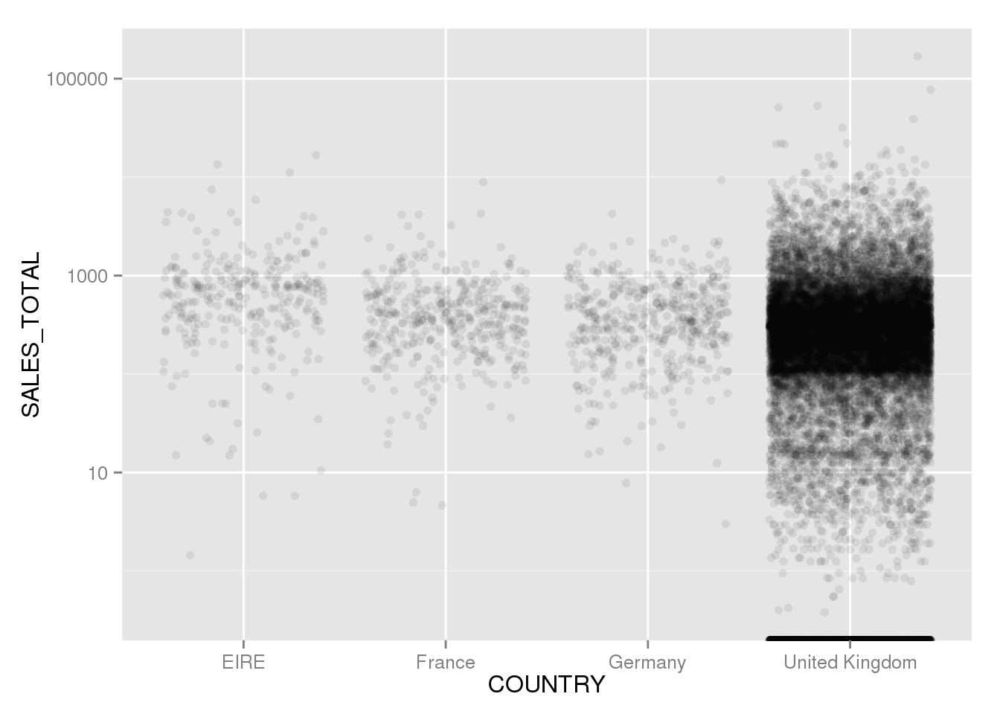

Chapter 6 Basic SQL
The simplest queries are only a line or two of code, containing two or three keywords. All queries that read data from a table follows this structure:
First, the keyword
SELECT, followed by the variables (consistently referred to as columns in database jargon) you wish to select.Second, the keyword
FROMfollowed by the name of the table or the view you want to select from. A database table is the analogous to a dataframe in R. Details differ, but it is a rectangular sheet of data consisting of rows and columns/variables. Unlike in normal R dataframes there is no inherent row index in SQL tables, but most database tables have an index created explicitly in order to ensure data integrety.You might want to subset the rows, not just the columns. This is done with the
WHEREkeyword, followed by whatever conditions you like. Unlike R, SQL uses single equal-signs to check for equality.
SQL is case-insensitive, but a certain coding standard has evolved.
6.1 SELECT FROM WHERE? Starting our exploration
We will be working with the movie table that comes with the BigData Lite VM. This table contains the movie title, year, budget, revenue and plot summary from some fairly recent movies. Usually you would probably do the initial exploration in a standalone SQL client, but if you want to explore the data with R, perhaps to give some basic description to your readers, it can easily be done.
6.1.1 A quick glance at our data
No matter how advanced, most data analysis starts with a simple look at the data just to get a feel for some real values. Let's select the first 10 rows from the table.
SELECT * FROM trx
FETCH FIRST 10 ROWS ONLY| INVOICENO | STOCKCODE | DESCRIPTION | QUANTITY | INVOICEDATE | UNITPRICE | CUSTOMERID | COUNTRY |
|---|---|---|---|---|---|---|---|
| 536384 | 22189 | CREAM HEART CARD HOLDER | 4 | 2010-12-01 09:53:00 | 4.0 | 18074 | United Kingdom |
| 536384 | 22427 | ENAMEL FLOWER JUG CREAM | 3 | 2010-12-01 09:53:00 | 6.0 | 18074 | United Kingdom |
| 536384 | 22428 | ENAMEL FIRE BUCKET CREAM | 6 | 2010-12-01 09:53:00 | 7.0 | 18074 | United Kingdom |
| 536384 | 22424 | ENAMEL BREAD BIN CREAM | 8 | 2010-12-01 09:53:00 | 10.9 | 18074 | United Kingdom |
| 536385 | 22783 | SET 3 WICKER OVAL BASKETS W LIDS | 1 | 2010-12-01 09:56:00 | 19.9 | 17420 | United Kingdom |
| 536385 | 22961 | JAM MAKING SET PRINTED | 12 | 2010-12-01 09:56:00 | 1.4 | 17420 | United Kingdom |
| 536385 | 22960 | JAM MAKING SET WITH JARS | 6 | 2010-12-01 09:56:00 | 4.2 | 17420 | United Kingdom |
| 536385 | 22663 | JUMBO BAG DOLLY GIRL DESIGN | 10 | 2010-12-01 09:56:00 | 1.9 | 17420 | United Kingdom |
| 536385 | 85049A | TRADITIONAL CHRISTMAS RIBBONS | 12 | 2010-12-01 09:56:00 | 1.2 | 17420 | United Kingdom |
| 536385 | 22168 | ORGANISER WOOD ANTIQUE WHITE | 2 | 2010-12-01 09:56:00 | 8.5 | 17420 | United Kingdom |
InvoiceNo, StockCode and CustomerID seems to be random ID numbers, which will be useful later on. First, let's note that the description is a freetext column, there is no column for total salesprice, but this is easily calculated from UnitPrice and Quantity.
Note that FETCH FIRST 10 ROWS ONLY is Oracle-specific, other databases have different syntaxes, e.g. LIMIT 10 in MySQL.
Since we have customer IDs, we might be able to track a single customer over several purchases. To check this, we can select only rows from a single customer.
SELECT * FROM trx
WHERE CUSTOMERID='13058'| INVOICENO | STOCKCODE | DESCRIPTION | QUANTITY | INVOICEDATE | UNITPRICE | CUSTOMERID | COUNTRY |
|---|---|---|---|---|---|---|---|
| 559636 | 47590B | PINK HAPPY BIRTHDAY BUNTING | 3 | 2011-07-11 12:01:00 | 5.5 | 13058 | United Kingdom |
| 559636 | 47590A | BLUE HAPPY BIRTHDAY BUNTING | 3 | 2011-07-11 12:01:00 | 5.5 | 13058 | United Kingdom |
| 559636 | 23298 | SPOTTY BUNTING | 3 | 2011-07-11 12:01:00 | 5.0 | 13058 | United Kingdom |
| 570832 | 47590A | BLUE HAPPY BIRTHDAY BUNTING | 6 | 2011-10-12 13:28:00 | 5.5 | 13058 | United Kingdom |
| 570832 | 47590B | PINK HAPPY BIRTHDAY BUNTING | 6 | 2011-10-12 13:28:00 | 5.5 | 13058 | United Kingdom |
| 570832 | 23313 | VINTAGE CHRISTMAS BUNTING | 5 | 2011-10-12 13:28:00 | 5.0 | 13058 | United Kingdom |
| 576539 | 23313 | VINTAGE CHRISTMAS BUNTING | 25 | 2011-11-15 12:43:00 | 5.0 | 13058 | United Kingdom |
| 576539 | 22776 | SWEETHEART 3 TIER CAKE STAND | 1 | 2011-11-15 12:43:00 | 9.9 | 13058 | United Kingdom |
Indeed, we see this customer returning on three different dates between July and November 2011.
You might have noticed that we have no information about the denomination for either the quantity or price, which is actually surprisingly common in real life. We suspect that the dataset comes from the US, which would make dollar the right currency. Amount-wise this makes sense, but it might be british pounds, or a combination. All the quantities are whole numbers, and the product names suggests that these are separate items, as opposed to kilos, meters, liters or some other more esoteric continuous measurement.
6.1.2 Aggregating your results
First off, let's check the total sales at this shop.
SELECT SUM(unitprice*quantity) AS totalSales FROM trx| TOTALSALES |
|---|
| 9747748 |
The shop has sold for almost $10 millon, which is a good amount. But this triggers even more questions. How many units have it sold, and over which time period is this? This is where the date format pays off. We can simply subtract the maximum date from the minimum date in the table, and Oracle returns the number of days inbetween. Note that since we are dealing with timestamps, we are returned a decimal number which we can just round off.
SELECT
SUM(quantity) AS units_sold,
SUM(unitprice*quantity) AS totalSales,
ROUND(MAX(INVOICEDATE)-MIN(INVOICEDATE)) AS timeperiod,
ROUND(SUM(unitprice*quantity)/SUM(quantity), 2) AS avg_price
FROM trx| UNITS_SOLD | TOTALSALES | TIMEPERIOD | AVG_PRICE |
|---|---|---|---|
| 5176450 | 9747748 | 373 | 1.9 |
A lot is happening here, so we will go through each column individually:
SUM(quantity) AS units_soldreturns the sum of thequantitycolumn, and uses theASkeyword to give the resulting column a new nameunits_sold.SUM(unitprice*quantity) AS totalSalesmultiplies the columnsunitpriceandquantity, and sums the product. The result is given the new column nametotalSales.ROUND(MAX(INVOICEDATE)-MIN(INVOICEDATE)) AS timeperiodsubtracts the latest (e.g. maximum) invoice date from the first (e.g. minimum) invoice date. The result is the number of days between the two dates, but since these columns are actually timestamps we are presented with a long decimal number which we round off using theROUND()function.ROUND(SUM(unitprice*quantity)/SUM(quantity), 2) AS avg_pricedivides the total sales by the total units sold, which gives us the average unit price. To avoid overly long decimal numbers, we round it off to two decimal points.
Lastly, let's just check the total number of rows in the table, using the COUNT(*) function.
SELECT COUNT(1) AS number_of_rows FROM trx| NUMBER_OF_ROWS |
|---|
| 541909 |
The number of rows is fairly unimportant from a business perspective, as it neither reflects the number of units sold or the number of transactions.
The table also contains a Country column, which we have seen contains United Kingdom and we suspect contains the United States. Let's check how many countries there are, and the sales in each. In fact, we can reuse and extend the large query above to get statistics per country.
SELECT country,
SUM(quantity) AS units_sold,
SUM(unitprice*quantity) AS totalSales,
ROUND(MAX(INVOICEDATE)-MIN(INVOICEDATE)) AS timeperiod,
ROUND(SUM(unitprice*quantity)/SUM(quantity), 2) AS avg_price
FROM trx
GROUP BY country
ORDER BY 2 DESC| COUNTRY | UNITS_SOLD | TOTALSALES | TIMEPERIOD | AVG_PRICE |
|---|---|---|---|---|
| United Kingdom | 4263829 | 8187806 | 373 | 1.9 |
| Netherlands | 200128 | 284662 | 372 | 1.4 |
| EIRE | 142637 | 263277 | 372 | 1.9 |
| Germany | 117448 | 221698 | 373 | 1.9 |
| France | 110480 | 197404 | 373 | 1.8 |
| Australia | 83653 | 137077 | 358 | 1.6 |
| Sweden | 35637 | 36596 | 356 | 1.0 |
| Switzerland | 30325 | 56385 | 361 | 1.9 |
| Spain | 26824 | 54775 | 369 | 2.0 |
| Japan | 25218 | 35341 | 366 | 1.4 |
Note the final line, ORDER BY 2 DESC. This sorts the output data by the second column, in descending order. This way, the countries with the largest sales appear first. It is possible to order by multiple columns (we could say ORDER BY 2 DESC, country) to make sure any ties are sorted alphabetically by country. Passing column numbers instead of column nicknames is a nice shortcut, but we could just as well have written ORDER BY units_sold DESC. The ORDER BY clause is one of the few commands in Oracle that accepts the nicknames we create in the SELECT statement.
This is indeed a nice overview, and properly sorted. Before we continue though, let's improve our understanding further with some visualizations.
In order to visualize, we have to first load the data into an R data frame. We will show how to pass a query into a data frame using the ROracle library. This process consists of passing a query (and a database connection) into the function dbSendQuery. This, however, does not return the data. In order to return the data set, you have to run fetch on the result of dbSendQuery. It is this resulting data frame that we will be plotting, using ggplot.
dfq <- dbSendQuery(con, "
SELECT country, SUM(quantity*unitprice) AS sales_total FROM trx
WHERE country IN(
SELECT country FROM trx
GROUP BY country
ORDER BY COUNT(*) desc
FETCH FIRST 4 ROWS ONLY
)
GROUP BY COUNTRY, INVOICENO, CUSTOMERID
")
dfd2 <- fetch(dfq)
library(ggplot2)
library(dplyr)
dfd2 %>% ggplot(aes(COUNTRY, SALES_TOTAL)) +
geom_jitter(alpha=0.08, stroke=0) +
scale_y_log10()## Warning in scale$trans$trans(x): NaNs produced## Warning: Removed 3661 rows containing missing values (geom_point).
This figure plots the different reciept totals, for the four biggest markets of the store. We can see that we are dealing with totals centered in the 100 - 10 000 dollar range (1e+02 to 1e+04), suggesting that this store is probably into wholesale.
The plot (or rather the warning messages) shows us something else as well: A good portion of the values are removed because the log value was a NaN, meaning Not a Number. What this means in practice, is that some of the reciept totals must be negative. This is quite unexpected, and warrants investigation.
As for the code, there are some points to be made. Firstly, the SQL statement is sent to the server with the dbQuery function, which takes as arguments our Oracle connection and the SQL statement we want to excute. The output from this function (stored in the dfq variable) is simply some summary information about the query, not the actual result returned from the query. The result is returned from the next statement, the fetch(dfq) function. The data frame dfd2 is now a standard R dataframe containing the result of the query as we would expect. Note that all column names returned from Oracle are uppercase, regardless of how you capitalized them in the SQL statement.
Secondly, the dataframe that is returned can be fed directly into the ggplot function from the excellent ggplot2 library. Books have been written about ggplot, and we are not going to go into the library in details. But the code basically does the following: 1. It passes the two variables we want in our plot into the function aes which stands for aesthetic. 2. It then adds an element to the visualization, geom_jitter, that, based on the two variables we specified in the line above, creates a scatterplot of country and sales. Because country is a category variable, we don't want all our points to fall on a single line. That is why we use the geom_jitter function instead of the geom_point function. We are adding some random offset for each point on the X-axis, resulting in wide strokes that gives a better visual indication of the distribution. 3. Lastly, because the values varies so widely on the Y-axis, we add a logarithmic Y-axis. By default a linear Y-axis would have been added (without us having to specify anything), but adding our own axis overwrites the default.
ggplot2 is a great library for visualizations, and if you want to learn more, one starting point is the documentation (littered with examples) at ggplot2.tidyverse.org.
Another thing that happened in the code above, was a subquery. Instead of specifying that the country name should be EIRE or France or Germany or United Kingdom, we use an in() function, which usually takes a comma-separated list of accepted values, and replace the list with an entire SQL query that returns the country names we want. We can even run the subquery by itself, to see that it indeed is entirely valid and returns the name of the 4 largest countries in our dataset.
SELECT country FROM trx
GROUP BY country
ORDER BY COUNT(*) desc
FETCH FIRST 4 ROWS ONLY| COUNTRY |
|---|
| United Kingdom |
| Germany |
| France |
| EIRE |
Combining queries like this can be powerful, and the query and subquery could be from different tables - as long as the countries are spelled the same, our database won't care.
Other ways of combining data will be covered when we start grappling with some of the sample data that comes with Oracle.
6.2 More ways to JOIN tables
Subqueries are great, but using joins to combine the content of multiple tables is just as frequent a task. In order to demonstrate a good use case for joins, we will take a quick detour from our transaction data and visit some of the sample data that came with the BigData Lite VM. Using the moviedemo user, you will find three tables named movie,movie_cast and cast. These tables are laid out in a way quite typical for relational databases. The movie table contains basic information about movies, such as their name, budget, and year produced as well as a movie ID to uniquely identify the movie. The cast table contains the name and a unique ID of every actor in these movies. Because one movie uses many actors, and one actor can star in several movies, the movie-cast table functions as a lookup table listing which actor played in which movie.
Using joins, we can select movie titles (from the movie table) and cast names (from the cast table), using the movie_cast table:
SELECT title, year, name FROM movie m
INNER JOIN movie_cast mc ON m.movie_id=mc.movie_id
INNER JOIN cast c ON c.cast_id=mc.cast_id
WHERE year BETWEEN 1900 AND 1910
ORDER BY title| TITLE | YEAR | NAME |
|---|---|---|
| A Corner in Wheat | 1909 | James Kirkwood |
| A Corner in Wheat | 1909 | Linda Arvidson |
| A Corner in Wheat | 1909 | Grace Henderson |
| A Corner in Wheat | 1909 | H. B. Walthall |
| A Corner in Wheat | 1909 | Frank Powell |
| A Corner in Wheat | 1909 | W. C. Miller |
| A Corner in Wheat | 1909 | Gladys Egan |
| A Corner in Wheat | 1909 | Blanche Sweet |
| Le voyage dans la lune | 1902 | Jeanne d'Alcy |
| Le voyage dans la lune | 1902 | Georges Melies |
We are not displaying any information from the movie_cast table, insted we are simply using this table to join the movie table with the cast table.
A word of caution about joins: If the columns you are joining on not uniquely identifies rows in two or more of the tables, you end up with what is known as many-to-many joins. SQL handles these situations by creating a carthesian join, meaning it creates all possible combinations of the rows. If you happen to have two rows with identical ID in both tables, the result will contain 2 x 2 = 4 rows with that ID. Although this behavior can be useful at times, it is normally not what you want to see happen.
6.3 A few common gotchas
Before diving deep into data exploration, there are a couple of novelties in how SQL works that is worth mentioning. These are not unique to Oracle or SQL, but depending on the language you come from these behaviours might trip you. So take some time now to make sure you are aware of them.
6.3.1 Missing values
You might be familiar with how R handles missing values, SQL has a similar but somewhat different approach, but both R and SQL are based on set theory.
Missing values in SQL are referred to as NULLs. NULL values are different from all other values, and neither smaller, larger nor equal any other value. NULLs are not even equal NULL. If you want to select rows where a given variable is NULL, you have to use the special condition IS NULL. For example, we can count the number of customers we don't have an address of:
SELECT COUNT(1) AS missing_addresses FROM customer
WHERE street_address IS NULL| MISSING_ADDRESSES |
|---|
| 2191 |
Out of our almost 5 000 customers, we don't have an address on almost 3 000.
In aggregate functions though, NULLs are ignored by default and do not usually require special treatment. We can show this by selecting the number of street addresses in the customer table, which will ignore the missing addresses:
SELECT COUNT(street_address) AS num_addr FROM customer| NUM_ADDR |
|---|
| 2657 |
This will be identical to the number of rows where the address is not missing:
SELECT COUNT(1) AS num_addr FROM customer
WHERE street_address IS NOT NULL| NUM_ADDR |
|---|
| 2657 |
The same behavior will be true for other aggregate functions, such as AVG().
6.3.2 Execution order
When you program in R or most other languages, you expect the machine to throw an error and exit after the first error in the code. After fixing this one, subsequent errors may manifest as the executor reaches them.
SQL is not most other languages. The execution order of the script is not linear from top to bottom, and as a result the order in which errors are thrown might seem arbitrary. The appendix gives a little more detail on the execution order, but for now just know that errors are not necessarily given to you in a left-to-right fashion.
6.3.3 ANSI and the dialects
For better and worse, SQL is not one language. Much of the basic syntax and behavior is specified by ANSI (American National Standards Institute), and is frequently referred to as ANSI SQL. But any given database vendor can choose to leave out certain features, and also to implement additional features not in ANSI.
In the later years, Oracle has stived to implement all of ANSI. But Oracle also implements a host of other features that are not in ANSI. Some of these features are extremely powerful, and we will spend time discussing many of them.